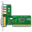

Oxygen
Diese Seite stellt eine Sammlung einiger Icons aus dem Oxygen Projekt  bereit, die auf jeder Seite genutzt werden können. Die Oxygen Icons sind die Standard-Symbole von KDE 4. Sie stehen unter der GNU Lesser General Public License .
bereit, die auf jeder Seite genutzt werden können. Die Oxygen Icons sind die Standard-Symbole von KDE 4. Sie stehen unter der GNU Lesser General Public License .
Eingebunden werden sie normalerweise über
[[Bild(Wiki/Icons/Oxygen/Name_des_Icons.png,Wunschgröße,Ausrichtung)]]
Beispiel: [[Bild(Wiki/Icons/Oxygen/accessories-text-editor.png, 14,)]] ergibt
| Dokument | |||
| Icon | Dateiname | Icon | Dateiname |
| Oxygen/accessories-text-editor.png | Oxygen/bookmark-new.png | ||
| Oxygen/document-new.png | Oxygen/document-open.png | ||
| Oxygen/document-print.png | Oxygen/document-save-as.png | ||
 | Oxygen/document-save.png | Oxygen/edit-clear.png | |
| Oxygen/edit-copy.png | Oxygen/edit-cut.png | ||
| Oxygen/edit-delete.png | Oxygen/edit-find.png | ||
| Oxygen/edit-paste.png | Oxygen/edit-select-all.png | ||
| Oxygen/folder-new.png | Oxygen/folder.png | ||
| Oxygen/folder-remote.png | Oxygen/user-home.png | ||
| Oxygen/document-properties.png | Oxygen/datashow.png | ||
| Oxygen/fileclose.png | Oxygen/contents.png | ||
| Dateityp | |||
| Icon | Dateiname | Icon | Dateiname |
| Oxygen/audio-x-generic.png | Oxygen/image-x-generic.png | ||
| Oxygen/pdf.png |  | Oxygen/text-x-generic.png | |
| Oxygen/video-x-generic.png | |||
| Navigation | |||
| Icon | Dateiname | Icon | Dateiname |
| Oxygen/go-bottom.png | Oxygen/go-down.png | ||
| Oxygen/go-first.png | Oxygen/go-home.png | ||
| Oxygen/go-jump.png | Oxygen/go-last.png | ||
| Oxygen/go-next.png | Oxygen/go-previous.png | ||
| Oxygen/go-top.png | Oxygen/go-up.png | ||
| Internet | |||
| Icon | Dateiname | Icon | Dateiname |
| Oxygen/internet-mail.png | Oxygen/internet-telephony.png | ||
| Oxygen/internet-web-browser.png | |||
| Netzwerk | |||
| Icon | Dateiname | Icon | Dateiname |
| Oxygen/network-wired.png |  | Oxygen/network-wireless.png | |
 | Oxygen/network-connect.png | Oxygen/network-disconnect.png | |
| Listen | |||
| Icon | Dateiname | Icon | Dateiname |
| Oxygen/list-add.png |  | Oxygen/list-remove.png | |
| Multimedia | |||
| Icon | Dateiname | Icon | Dateiname |
| Oxygen/media-eject.png | Oxygen/media-playback-pause.png | ||
| Oxygen/media-playback-start.png | Oxygen/media-playback-stop.png | ||
| Oxygen/media-record.png | Oxygen/media-seek-backward.png | ||
| Oxygen/media-seek-forward.png | Oxygen/media-skip-backward.png | ||
| Oxygen/media-skip-forward.png | Oxygen/media-playlist-shuffle.png | ||
 | Oxygen/media-playlist-repeat.png | Oxygen/view-media-equalizer.png | |
| System | |||
| Icon | Dateiname | Icon | Dateiname |
| Oxygen/process-stop.png | Oxygen/system-log-out.png | ||
| Oxygen/system-search.png | Oxygen/system-shutdown.png | ||
| Oxygen/user-desktop.png | Oxygen/user-trash.png | ||
| Oxygen/system-restart.png | Oxygen/system_users.png | ||
| Oxygen/tools_report_bug.png | Oxygen/preferences.png | ||
| Ansichtsmodi | |||
| Icon | Dateiname | Icon | Dateiname |
| Oxygen/view-fullscreen.png | Oxygen/view-refresh.png | ||
| Oxygen/zoom-best-fit.png |  | Oxygen/zoom-in.png | |
| Oxygen/zoom-original.png | Oxygen/zoom-out.png | ||
| Hardware | |||
| Icon | Dateiname | Icon | Dateiname |
|  | Oxygen/audio-card.png | Oxygen/audio-headset.png | |
| Oxygen/audio-input-line.png | Oxygen/audio-input-microphone.png | ||
| Oxygen/camera-photo.png | Oxygen/camera-web.png | ||
| Oxygen/computer.png | Oxygen/computer-laptop.png | ||
| Oxygen/cpu.png | Oxygen/drive-harddisk.png | ||
| Oxygen/drive-optical.png | Oxygen/drive-removable-media.png | ||
| Oxygen/drive-removable-media-usb-pendrive.png | Oxygen/drive-removable-media-usb.png | ||
 | Oxygen/input-gaming.png | Oxygen/input-keyboard.png | |
| Oxygen/input-mouse.png | Oxygen/input-tablet.png | ||
| Oxygen/media-flash-memory-stick.png | Oxygen/media-flash.png | ||
| Oxygen/media-flash-sd-mmc.png | Oxygen/media-flash-smart-media.png | ||
| Oxygen/media-floppy.png |  | Oxygen/media-optical-audio.png | |
| Oxygen/media-optical.png | Oxygen/media-optical-recordable.png | ||
| Oxygen/media-tape.png | Oxygen/modem.png | ||
| Oxygen/multimedia-player-apple-ipod.png | Oxygen/multimedia-player.png | ||
| Oxygen/pda.png | Oxygen/phone.png | ||
| Oxygen/tablet.png | Oxygen/smartphone.png | ||
| Oxygen/printer.png | Oxygen/scanner.png | ||
| Oxygen/video-display.png | Oxygen/video-projector.png | ||
| Oxygen/video-television.png | Oxygen/battery.png | ||
| Einstellungen | |||
| Icon | Dateiname | Icon | Dateiname |
| Oxygen/preferences-other.png | Oxygen/preferences-system.png | ||
| Oxygen/preferences-desktop.png | Oxygen/preferences-system-network.png | ||
| Oxygen/preferences-contact-list.png | Oxygen/preferences-desktop-accessibility.png | ||
| Oxygen/preferences-desktop-color.png | Oxygen/preferences-desktop-cryptography.png | ||
| Oxygen/preferences-desktop-default-applications.png |  | Oxygen/preferences-desktop-display.png | |
| Oxygen/preferences-desktop-font.png | Oxygen/preferences-desktop-gaming.png | ||
| Oxygen/preferences-desktop-icons.png | Oxygen/preferences-desktop-keyboard.png | ||
| Oxygen/preferences-desktop-locale.png |  | Oxygen/preferences-desktop-mouse.png | |
| Oxygen/preferences-desktop-notification.png | Oxygen/preferences-desktop-peripherals.png | ||
| Oxygen/preferences-desktop-printer.png | Oxygen/preferences-desktop-screensaver.png | ||
| Oxygen/preferences-desktop-sound.png | Oxygen/preferences-desktop-text-to-speech.png | ||
| Oxygen/preferences-desktop-theme.png | Oxygen/preferences-desktop-user-password.png | ||
| Oxygen/preferences-desktop-user.png | Oxygen/preferences-desktop-wallpaper.png | ||
| Oxygen/preferences-kcalc-constants.png | Oxygen/preferences-plugin.png | ||
| Oxygen/preferences-system-bluetooth.png | Oxygen/preferences-system-login.png | ||
| Oxygen/preferences-system-network-sharing.png | Oxygen/preferences-system-power-management.png | ||
| Oxygen/preferences-system-time.png | Oxygen/preferences-system-windows.png | ||
| Oxygen/preferences-desktop-personal.png | Oxygen/preferences-system-session-services.png | ||
| Oxygen/preferences-desktop-filetype-association.png | Oxygen/user-identity.png | ||
| Anwendungen | |||
| Icon | Dateiname | Icon | Dateiname |
| Oxygen/k3b.png | Oxygen/k3b_1.png | ||
| Oxygen/konversation.png | Oxygen/kontact.png | ||
| Oxygen/partitionmanager.png | Oxygen/knotes.png | ||
| Oxygen/kaffeine.png | Oxygen/digikam.png | ||
| Oxygen/hwinfo.png | Oxygen/akonadi.png | ||
| Oxygen/nepomuk.png | Oxygen/konsole.png | ||
| Oxygen/preferences-activities.png | |||
| Diverses | |||
| Icon | Dateiname | Icon | Dateiname |
| Oxygen/office-calendar.png | Oxygen/help-browser.png | ||
| Oxygen/X.png | Oxygen/emblem-favorite.png | ||
| Oxygen/terminal.png | Oxygen/utilities-file-archiver.png | ||
| Oxygen/kde.png | Oxygen/applications-internet.png | ||
| Oxygen/plasma.png | Oxygen/applications-other.png | ||
| Oxygen/security-high.png | Oxygen/security-medium.png | ||
| Oxygen/security-low.png | Oxygen/dialog-ok-apply.png | ||
| Oxygen/applications-games.png | Oxygen/object-locked.png | ||
| Oxygen/system-run.png | Oxygen/system-software-update.png | ||
| Oxygen/face-smile.png | Oxygen/get-hot-new-stuff.png | ||
| Oxygen/view-calendar-day.png | Oxygen/applications_engineering.png | ||
- Erstellt mit Inyoka
-
 2004 – 2017 ubuntuusers.de • Einige Rechte vorbehalten
2004 – 2017 ubuntuusers.de • Einige Rechte vorbehalten
Lizenz • Kontakt • Datenschutz • Impressum • Serverstatus -
Serverhousing gespendet von